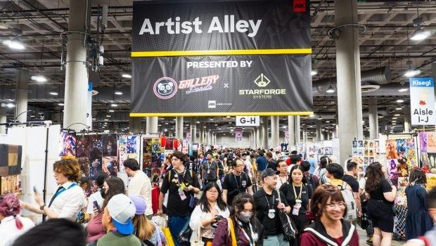

Festivals · Culture
Anime Expo 2027
- Dates
- –
- Venue
- Los Angeles Convention Center
- Location
- Los Angeles, United States
- Format
- In-person
- Category
- Culture
- Industry
- Pop culture
- Organiser
- Society for the Promotion of Japanese Animation (SPJA)
- Expected attendance
- 100,000
- Official website
- https://www.anime-expo.org/
About
US dates are local to the host city.
Topics: anime, Japanese pop culture.
Official site: 'the largest anime con around, with over 100,000 fans in attendance' (standing figure).
Sources
- Official — https://www.anime-expo.org/